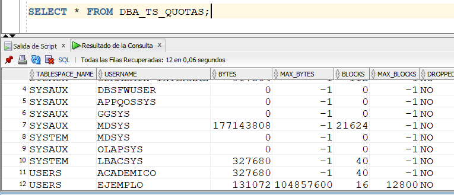
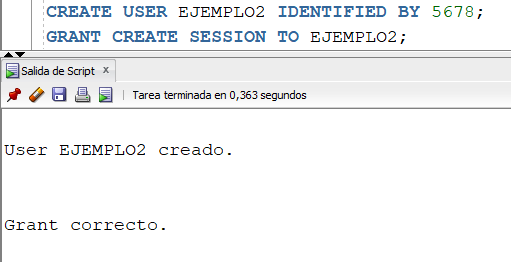
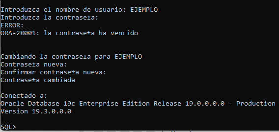

En Oracle, USUARIO y ESQUEMA son dos conceptos que van muy ligados entre si, por no decir que son casi sinónimos. Esto debido a que el ESQUEMA es el conjunto de objetos (tablas, vistas, índices, etc.) que hay dentro de una base de datos, y el USUARIO es el propietario o dueño de dichos objetos.
Inicialmente, el único usuario que puede crear usuarios es el administrador (SYS). Vamos a crear un nuevo usuario, en su forma básica. La instrucción CREATE USER exige incluir el nombre del usuario a crear (EJEMPLO) y, a través de la cláusula IDENTIFIED, se incluye cuál va a ser su password (1234).
La instrucción CREATE USER tiene otras opciones, las cuales las vamos a ir abordando a medida que se desarrolla el tema.
Ahora, tratemos de conectarnos con el nuevo usuario. Intencionalmente, hagámoslo por SQL Plus, pero lo mismo sucedería por SQL Developer. A pesar de que digitamos correctamente el password del usuario (1234), saca el error mostrado. Hasta ahora, el usuario EJEMPLO está creado, pero no tiene permisos de hacer nada dentro de la base de datos, ni siquiera conectarse. Ese es el error generado.
A esos permisos que se le otorgan o quitan a un usuario para manipular objetos lógicos de la base de datos, tales como tablas, sesiones, índices, vistas, triggers, etc, se les conoce como PRIVILEGIOS.

Es decir, el usuario EJEMPLO no tiene el privilegio de conectarse a una sesión de la base de datos.
La instrucción para darle privilegios a un usuario sobre objetos de la base de datos es el GRANT. La manera como le podemos dar el privilegio de conectarse a la base de datos al usuario EJEMPLO es la siguiente. También se le podría dar el privilegio CONNECT y tendría el mismo efecto que CREATE SESSION.
La instrucción se entiende bien si se hace una traducción literal de la misma, del inglés al español. Significa "otorgar el privilegio (o permiso) de crear una sesión (conectarse a la base de datos) al usuario EJEMPLO".
Luego de darle estos permisos, observamos que ya el usuario EJEMPLO se puede conectar a la base de datos.
En el diccionario de datos de Oracle, podemos consultar información de los distintos usuarios existentes en la base de datos. Lo hacemos utilizando las vista ALL_USERS (o también, DBA_USERS, la cual da información más detallada). Lo podemos ver en la siguiente imagen. Ahí se puede ver la información del usuario EJEMPLO.
A continuación, desde el esquema del usuario EJEMPLO, vamos a crear una tabla. Hasta ahora, el único privilegio que tiene el usuario es de conectarse a la base de datos.
Aún no tiene permisos para crear tablas. Por lo tanto, desde el usuario administrador, vamos a darle ese privilegio.
Ahora, volvamos a intentar a crear la tabla en el esquema de EJEMPLO, y vemos que todo funciona perfectamente.
Ahora supongamos que el usuario EJEMPLO va a insertar tuplas en la tabla recién creada. El error generado dice que el usuario no tiene permisos para usar el tablespace USERS, el cual es el que se utiliza para grabar los datos de los usuarios. En realidad, lo que sucede es que el usuario no tiene una quota de almacenamiento en dicho tablespace. Por quota se entiende por espacio máximo de almacenamiento.
Vamos, entonces, desde SYS a darle una quota de almacenamiento al usuario un el tablespace USERS. Con la instrucción mostrada, le estamos asignando una quota máxima de 100 megas en el tablespace USERS. Es posible, también, darle una quota ilimitada al usuario. Eso se hace poniendo la palabra UNLIMITED donde se puso 100M.
Ahora, como se puede observar, el usuario puede insertar la tupla.
Para mirar la información de las quotas que tienen los usuarios sobre los tablespaces, podemos consultar lo siguiente. Podemos observar que el usuario EJEMPLO tiene una quota (MAX_BYTES) de 100 megas sobre el tablespace USERS. Esta consulta es muy útil para saber un usuario dado cuánto ha ocupado dentro de un tablespace y, por lo tanto, cuánto espacio le queda disponible.

Otra manera de otorgarle a un usuario permisos para crear objetos en su esquema, teniendo ya quota asignada en el tablespace, es GRANT RESOURCE.
Por otra parte, hay manera de asignarle a un usuario varios permisos a la vez. Esto se hace con la instrucción siguiente. Acá, al mismo tiempo, le estamos dando permisos para crear procedimientos y triggers al usuario EJEMPLO.
Para quitarle privilegios a un usuario, se usa la instrucción REVOKE. Vamos a quitarle al usuario EJEMPLO el privilegio de crear tablas. Ya, al usuario EJEMPLO, no lo deja crear tablas.
Por otra parte, vamos a hacer un ejemplo donde el usuario EJEMPLO le da privilegios a otro usuario para que manipule su tabla VEHICULO. Tener en cuenta que en estos momentos, la tabla VEHICULO tiene una sola tupla grabada.
Creemos un nuevo usuario llamado EJEMPLO2. Y le vamos a dar los privilegios iniciales correspondientes. Esto se hace desde SYS.

Ahora, estando conectados con el usuario recién creado, al intentar consultar la tabla VEHICULO del usuario EJEMPLO, saca error. No reconoce la tabla VEHICULO.
Si el usuario dueño de la tabla, EJEMPLO, le otorga privilegios, vamos a ver qué sucede. El GRANT mostrado lo hace el usuario EJEMPLO y le da privilegios de hacer solamente SELECT en la tabla VEHICULO. Y el SELECT exitoso lo hace EJEMPLO2.
También podría suceder lo siguiente. Acá, el usuario EJEMPLO le está dando privilegios a EJEMPLO2 para insertar tuplas en la tabla VEHICULO.
Ahora pongamos la siguiente situación. Supongamos que el usuario EJEMPLO2 le quiere dar privilegios a un tercer usuario, EJEMPLO3, de consultar la tabla VEHICULO del esquema de EJEMPLO. Como podemos observar, esta acción transitiva no es permitida en este caso, y por lo tanto saca el error mostrado.
Para que transitivamente el usuario EJEMPLO2 le pueda dar privilegios a EJEMPLO3, para acceder a un objeto de EJEMPLO, éste último usuario le tuvo que haber dado al usuario EJEMPLO2 privilegios con la cláusula WITH GRANT OPTION. Ahora sí deja a EJEMPLO2 darle permisos a EJEMPLO3 de consultar la tabla VEHICULO.
Por ejemplo, para darle privilegios a todos los usuarios de hacer SELECT sobre la table VEHICULO, EJEMPLO puede ejecutar la siguiente instrucción:
Otra opción de creación de usuarios
También podemos crear un usuario, no solamente indicando cuál va a ser su password, sino dando otras opciones importantes. Miremos el comando siguiente. Acá le estamos diciendo a Oracle que cree un usuario llamado EJEMPLO6, cuyo password es 1234. Además, que todos sus datos sean grabados en el tablespace T6, y que el tablespace temporal que va a utilizar dicho usuario es TEMP.
Pregunta: Si ejecutamos el siguiente comando ALTER USER EJEMPLO QUOTA 5M ON T1 QUOTA 0 ON USERS, qué implicaciones tiene?
Estados de los Usuarios
En algún momento, el administrador puede bloquear la cuenta de usuario. De esta manera, dicho usuario no podrá entrar a la base de datos. La manera de hacerlo es la siguiente:
 |
Se puede observar que cuando el usuario trata de conectarse a la base de datos, le dice que la cuenta está bloqueada. Si queremos consultar el estado de una cuenta, podemos hacerle un SELECT a la vista DBA_USERS. En dicha consulta, nos damos cuenta que el usuario EJEMPLO está en estado LOCKED.
Si deseamos desbloquear la cuenta EJEMPLO, se ejecuta ALTER USER EJEMPLO ACCOUNT UNLOCK. De esta manera, la cuenta EJEMPLO ya queda en estado OPEN.
Otro de los posibles estados de un usuario es EXPIRED. Eso significa que dicho usuario tiene su password expirado. Como administrador, puedo forzar a que un usuario cambie su password la próxima vez que se conecte. Esto lo hago con el comando siguiente.
|  |
Si miramos su estado en DBA_USERS, encontramos:
Borrar Usuarios
Para borrar un usuario que aún no ha creado objetos en su esquema, utilizamos el comando DROP USER. Por otra parte, para eliminar un usuario cuyo esquema ya tiene objetos, hay que agregarle a la instrucción anterior la cláusula CASCADE,
Privilegios ANY
Los privilegios ANY corresponden a permisos que se le dan a un usuario para hacer acciones en CUALQUIER esquema, excepto en el de SYS. Miremos el siguiente ejemplo. Estando conectados en el usuario EJEMPLO2, vamos a tratar de crear una tabla en el esquema de EJEMPLO. Vemos que saca un error de privilegios insuficientes. Entonces, por SYS, vamos a darle el privilegio ANY al usuario EJEMPLO2 para crear tablas. De esta manera, cuando el usuario EJEMPLO2 vaya a crear la tabla T! en el esquema EJEMPLO, no hay problema.
Actividad . Qué harán las cláusulas GRANT UPDATE(Apellidos) ON ALUMNOS TO EJEMPLO2 ? GRANT INSERT(Código, Nombre) ON ALUMNOS TO EJEMPLO2 ?
Actividad. Al dar privilegios a un usuario, cuál es la diferencia entre WITH ADMIN OPTION y WITH GRANT OPTION?
Actividad. Cuando se quitan permisos dados con WITH ADMIN OPTION, cuando se quitan estos permisos, NO se le quitan a todos los usuarios que los heredaron. Qué paso con WITH GRANT OPTION? Hacer la prueba.
Vistas sobre privilegios
Videos:
Otorgar Permisos - GRANT Básico
Otorgar Permisos - Usuario Permiso a Otro
Otorgar Permisos - With Admin Option